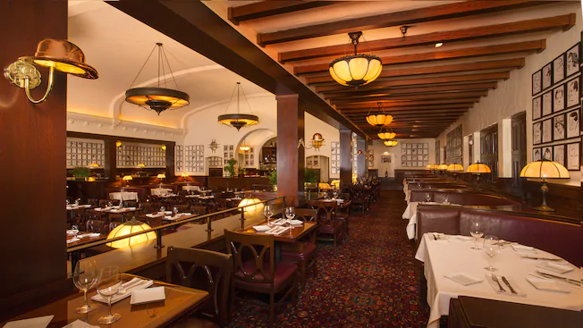
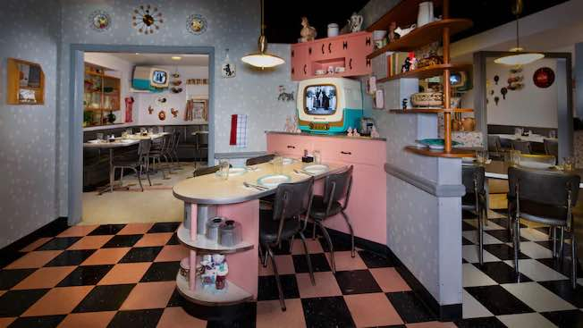
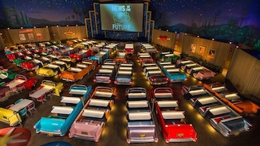

By Valentina
06 Ottobre 2020
Continuiamo la nostra serie sui migliori ristoranti Table Service nei parchi Disney della Florida. I ristoranti Table Service sono quelli con servizio completo al tavolo, a differenza dei Quick Service o Counter Service, che sono più vicini ai nostri fast-food.
Come per molte esperienze a Disney World, visitare uno di questi ristoranti richiede un po’ di pianificazione: infatti, vi ricordo che le prenotazioni per tutti i Table Service sono accettate a partire da 180 giorni prima della data che volete prenotare ed è buona prassi, soprattutto per quelli più famosi, piazzare la vostra prenotazione proprio il primo giorno disponibile, per non rischiare brutte sorprese.
Armatevi quindi di un buon calendario e tanta pazienza per aggiudicarvi un tavolo! Le prenotazioni possono essere fatte via My Disney Experience app o tramite la vostra area clienti nel sito di Walt Disney World.
Dopo aver dato un’occhiata ai ristoranti di Magic Kingdom, oggi siamo agli Hollywood Studios.
Sfortunatamente, gli Hollywood Studios non sono mai stati famosi per la loro offerta culinaria (attendiamo con ansia il nuovo Table service di Toy Story Land per cambiare idea!), ma sono sicura che la mia lista dei migliori ristoranti potrà aiutarvi a scegliere pranzo o la cena perfetto per voi e la vostra famiglia.
3 . The Hollywood Brown Derby

Replica di un vero locale di Hollywood con lo stesso nome, questo ristorante offre un’esperienza un po’ meno tematizzata degli altri ristoranti nella lista e in generale, nei parchi Disney. Il locale e la cucina si presentano più sofisticati e si rivolge ad una clientela più adulta, rispetto agli altri ristoranti del parco. Questo ristorante ricade infatti nella categoria del “fine dining”: cucina raffinata.
Probabilmente, se questo ristorante fosse situato in uno degli altri parchi, non sarebbe finito nella Top 3, ma come accennato, gli Hollywood Studios non offrono molta scelta per quanto riguarda Table Service e tutto sommato questo ristorante, non proprio da parco a tema, è una solida scelta per quanto riguarda il cibo.
Il menù cambia molto di frequente, lo trovate qui.
Il prezzo medio è tra i $35 e i $55 per adulto.
Questo ristorante vale 1 credito Table Service nel Dining Plan.
Perchè mi piace?E’ uno dei pochi “ristoranti per adulti” dentro ad un parco Disney - anche se non è vietato ai bambini!. Le decorazioni sono impeccabili ma non in tema Disney ed il cibo è abbastanza vario per soddisfare tutti i gusti.
2 . 50’s Prime Time Café

Nonostante abbia già espresso il mio amore per questa location durante la mia lista di ristoranti in cui trovare il vero cibo tradizionale americano, ho deciso di non metter questo ristorante in prima posizione per una ragione: se il vostro inglese - o quello dei vostri figli - è incerto e/o non siete disposti ad interagire con le cameriere come la tematizzazione richiede, questa location potrebbe non essere il massimo del divertimento, per voi.
Ho descritto tematizzazione e piatti, nel mio articolo sul cibo tradizionale americano, andate a leggere!
Perchè mi piace? La tematizzazione è carinissima - se ti piace e vuoi stare al gioco - ed il cibo è tanto, semplice e buonissimo, proprio come piace a me!
Il prezzo medio è tra i $15 e i $35 per adulto.
Questo ristorante vale 1 credito Table Service nel Dining Plan.
1. Sci-Fi Dine-In Theater Restaurant

.
Valentina, perchè metti al numero uno un ristorante in cui non sei stata? Semplice, perchè il Sci-Fi Dine-In Theater ha sempre recensioni positivissime ed è al top della mia lista per il prossimo viaggio!.
.
Tematizzato come un vecchio drive-in, questo ristorante vi permetterà di gustarvi ottimo cibo (hamburger, panini, milkshake) comodamente seduti in auto o ad un tavolo da pic-nic, davanti ad un maxi-schermo che vi farà vedere una rassegna di corti animati, rigorosamente Disney.
.
Se vi serve una pausa dal caos dei parchi - e dalla famiglia - il Sci-Fi Dine-In Theater fa al caso vostro. Attenzione! Non si tratta di un teatro silenzioso! Sarete infatti autorizzati a ridere e scherzare con il resto della vostra famiglia, ma allo stesso tempo, sarete comodamente seduti in un ambiente leggermente scuro, con aria condizionata, e - speriamo - i vostri piccoli saranno intrattenuti dai cartoni animati sullo schermo.
Il menù completo lo trovate qui, e comprende burgers, insalate, pasta ed altre interessanti, ma non avventurose, proposte.
Il costo medio per un adulto è dai $15 ai $30
Questo ristorante vale 1 credito Table Service nel Dining Plan.
Perchè mi piace?Perchè è molto meno pretenzioso di altri ristoranti, ha cibo buono e ottimo intrattenimento per tutta la famiglia. I corti proiettati sullo schermo sono dei veri e propri cult per i visitatori assidui di WDW.
_ _ _
Se quest’articolo è stato interessante, non dimenticarti di seguirci sul podcast “Aperitivo a Main Street, U.S.A.”, disponibile su Spotify, Anchor e tutte le altre maggiori piattaforme audio!